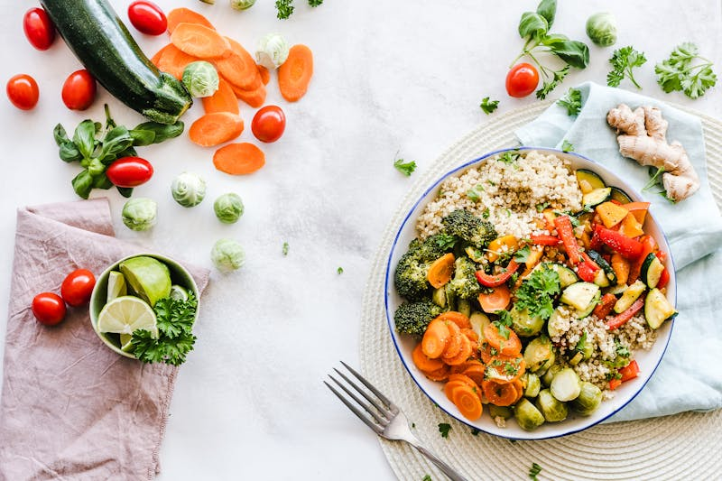

Khúc Ca Di Sản
Khám phá dòng chảy văn hóa ẩm thực Việt qua từng thời kỳ lịch sử.
Dòng Chảy Lịch Sử
Cội Nguồn Nông Nghiệp Lúa Nước
Từ ngàn năm trước, tổ tiên người Việt đã đặt nền móng cho nền văn minh lúa nước sông Hồng. Những hạt gạo trắng trong, những chum nước mắm mặn mòi nguyên bản đã trở thành linh hồn của bữa cơm Việt ngay từ thuở sơ khai. Triết lý cơm - canh - mắm phản ánh lối sống hài hòa tự nhiên, giản dị mà sâu sắc.
Sự Tinh Tế Của Ẩm Thực Cung Đình
Dưới các triều đại phong kiến, đặc biệt là triều Nguyễn tại Cố đô Huế, ẩm thực Việt đạt đến đỉnh cao của sự cầu kỳ và mỹ thuật. Mỗi món ăn dâng vua không chỉ ngon mà còn là một tác phẩm tạo hình nghệ thuật tuân thủ nghiêm ngặt ngũ hành sinh khắc. Mâm cỗ cung đình Huế có thể có hàng chục món tinh mỹ, cân bằng âm dương hoàn hảo.
Mâm Cỗ Và Nghi Lễ Cộng Đồng
Trong đình làng rêu phong ngày hội mùa hay tết đoàn viên, món ăn đóng vai trò liên kết cộng đồng bền chặt. Bánh chưng xanh vuông vức tượng đất, xôi gấc đỏ hồng, gà luộc cánh tiên, nem rán giòn và chè kho ngọt lịm dâng cúng tổ tiên, gửi gắm ước nguyện no ấm thái bình và lòng hiếu kính tổ tiên sâu sắc.
Giao Thoa Văn Hóa Đông Tây
Sự du nhập của bánh mì, bơ sữa, cà phê Pháp đã khơi nguồn cho những sáng tạo đột phá. Người Việt tiếp nhận nhưng bản địa hóa mạnh mẽ: chiếc bánh mì kẹp thịt patê chả lụa đẫm rau mùi nước xốt ra đời, và cà phê phin tí tách trở thành biểu tượng tinh thần giao thoa Á - Âu đầy tự hào.
Đô Thị Đường Phố & Hàng Rong
Khi các đô thị phát triển sầm uất, tiếng rao của những gánh phở gõ, hũ tiếu xe, xôi chè ngọt ngào len lỏi qua từng ngõ sâu. Ẩm thực đường phố bình dân tạo nên nét văn hóa đặc thù đầy chất thơ: nhanh, thân thiện, giá rẻ nhưng giữ trọn sự khéo léo chắt chiu trong từng thìa nước dùng gia truyền.
Sự Lan Tỏa Ra Khắp Năm Châu
Theo bước chân kiều bào hải ngoại, hương vị quê hương xuất hiện rạng rỡ từ Paris, Los Angeles đến Sydney. Phở bò thơm lừng và bánh mì giòn tan bước vào từ điển ẩm thực quốc tế, chinh phục thế giới bằng sự lành mạnh, mộc mạc và cân bằng dinh dưỡng xuất sắc.
Linh Hồn Việt Trong Nhịp Sống Mới
Dù nhịp sống hiện đại hối hả, bếp nhà Việt vẫn luôn đỏ lửa. Kế thừa di sản ngàn năm, thế hệ đầu bếp trẻ ngày nay đang viết tiếp chương mới cho ẩm thực Việt bằng kỹ thuật hiện đại kết hợp với cội nguồn truyền thống sâu sắc, mang Sắc Vị Việt vươn tầm nghệ thuật cao cấp.
"Căn bếp là trái tim của ngôi nhà Việt, nơi ngọn lửa luôn cháy ấm áp và tình yêu thương gia đình luôn đong đầy."Di sản văn hóa Việt Nam

Ngũ Hành Trong Ẩm Thực
Bữa cơm Việt là sự dung hòa kỳ diệu của Ngũ Hành: Kim (vị cay nồng), Mộc (vị chua thanh), Thủy (vị mặn mà), Hỏa (vị đắng ấm), Thổ (vị ngọt lành). Sự phối hợp gia vị tài tình không chỉ đem lại khoái cảm vị giác mà còn là bài thuốc cân bằng âm dương, bồi bổ khí huyết cho cơ thể theo mùa.
"Ăn theo thuốc, nằm theo hướng" — Trí tuệ dưỡng sinh ngàn đời của ông cha ta ẩn chứa trong từng món ăn.

Vươn Tầm Bản Đồ Thế Giới
Phở, bánh mì, cà phê sữa đá không còn là những cái tên xa lạ, chúng đã trở thành danh từ riêng kiêu hãnh trong ẩm thực thế giới. Từ những gánh hàng rong mộc mạc vỉa hè Sài Gòn, Hà Nội đến những nhà hàng đạt sao Michelin danh giá tại Paris hay Tokyo, hương vị Việt chinh phục bạn bè quốc tế bằng sự chân thành, mộc mạc và tinh tế vô ngần.
Khám phá thực đơnNguyên liệu đặc trưng
Nước Mắm Cốt
Linh hồn của ẩm thực Việt. Từ Phú Quốc đến Phan Thiết, giọt nước mắm chắt lọc tinh túy từ cá cơm muối biển lên men ròng rã cả năm, mang hương vị mặn mòi nồng nàn không thể thay thế.
Rau Thơm Vườn
Húng láng, tía tô, kinh giới, ngò gai — mỗi cọng rau thơm là một nốt nhạc bừng sáng vị giác. Thiếu đi mớ rau thơm tươi giòn, món Việt mất đi một nửa sinh khí thuần khiết.
Hạt Gạo Nếp
Từ chiếc bánh chưng ngày Tết sum họp đến gói xôi sáng ấm lòng, gạo nếp nương gắn bó máu thịt với tinh thần cội nguồn người Việt. Dẻo quánh, ngọt hậu, thơm lừng hương đồng nội.
Gia Vị Tươi Mộc
Sả, gừng, nghệ tươi, ớt cay, tỏi ấm — những gia vị củ rễ mộc mạc giã nhuyễn tạo nên sức sống nguyên bản. Chúng tôi trân trọng gia vị tươi mới nêm nếm trực tiếp, nói không với hương liệu khô chế sẵn.

Gìn Giữ Lửa Bếp Việt
Di sản ẩm thực không nằm yên trên trang giấy lịch sử. Nó đập nhịp sống động qua cách người bà hướng dẫn cháu vo gạo nếp thơm, cách người mẹ nêm chén nước chấm tỏi ớt, và cách người đầu bếp trẻ nâng niu tái hiện vị xưa quê nhà bằng tất cả tấm lòng hiếu kính và tôn trọng sâu sắc.